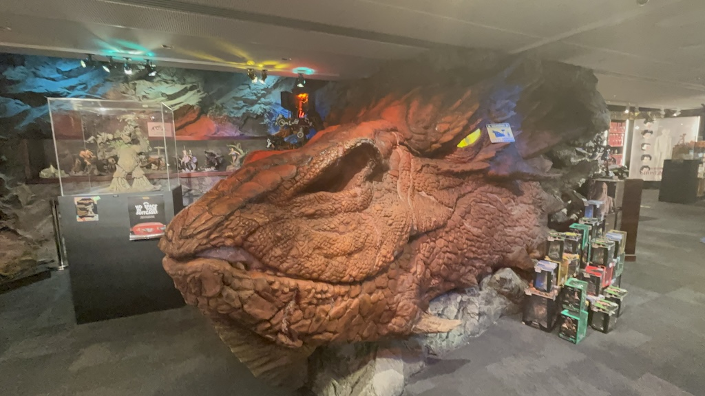
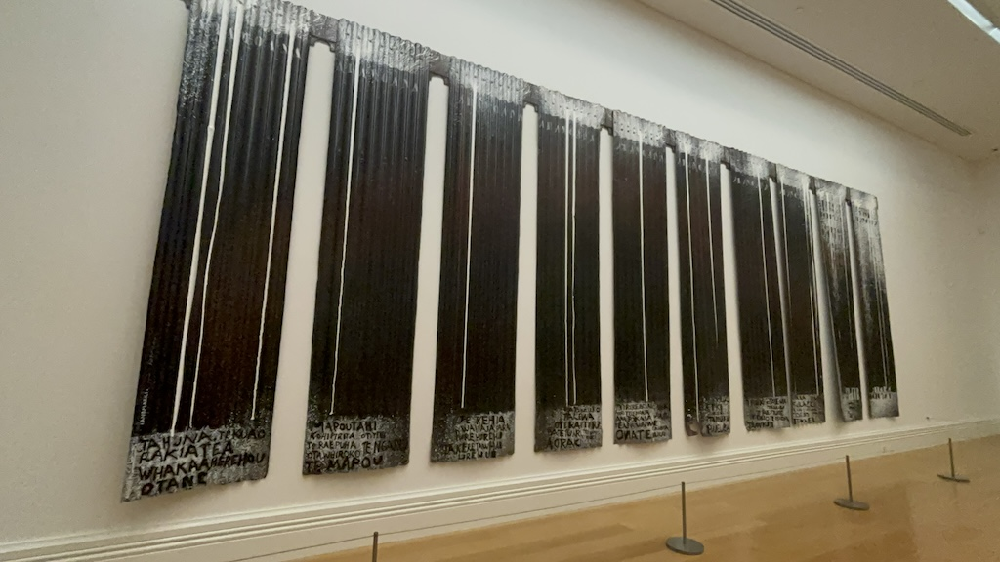
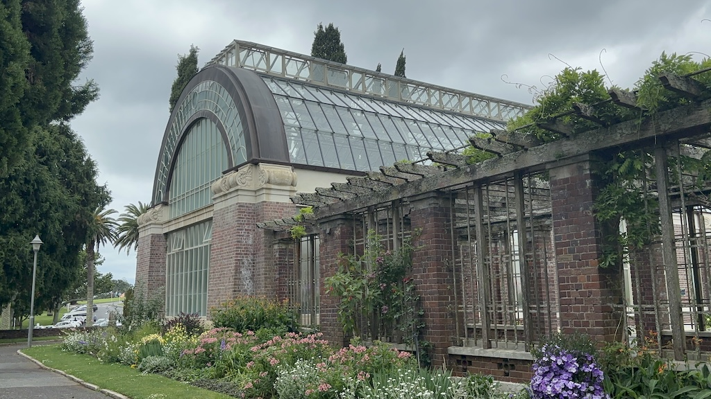

16th to 18th November
Hello again recurrent readers. I write to you today from the furthest country from the United Kingdom, New Zealand! My first stop was the countries largest city situated near the top of the North Island.
Arriving at night from Sydney I got to see the Auckland Sky Tower at night lit up in a rainbow of colours. It looks very similar to the Skytree I visited in Japan. Apologies for the blurry photo, not one I took was in focus. I blame the wearing of 2 backpacks on my shoddy photography.

Booking fairly late I picked one of the only hostels left to book with on Hostelworld; a place named Surf n Snow Backpackers. Not only was the large dorm room really dated, the price was about 3 times higher than the average rate due to the demand for beds on this particular Saturday. I was a bit worried the others in my dorm would come in drunk and loud at 1 in the morning after the scheduled Coldplay gig. Instead it was a staff member coming in at midnight that woke me. After being told the lights stay off after 10 the receptionist turned them on and checked each bed, I assume to see if any were free for another guest. The only thing worse than a jobsworth is a hypocrite.
The next day I spent my time exploring the "CBD", or central business district. The city feels like a big mix of older stone structures, most of which have been gentrified, and new large corporate buildings. The two kinds of structures are fully mixed together, often juxtaposed like the two shown below.

The harbourside is fairly industrial still, full of mooring points and pontoons that fleets of boats would have used in the past. Now it is used by morning runners, dog walkers, the occasional busker and everyone else like me going for a wander. It feels a lot like Bristol; except for the water, here it is a beautiful shade of blue. Although much more grey and man-made than the rest of New Zealand it is a pleasant place to be.

One of Weta Workshop's tour experiences are based in Auckland. The other is in Wellington, where the company was first set up (a short while after running out the founders flat). If you're a fan of Lord of the Rings the Wellington tour is much better, showing many more props and costumes they used for the Tolkien-based films there. Nonetheless I visited the store as it was right in the center of town. A big replica of Smaug is right in the middle of the store. He holds one eye open that has been programmed to follow people as they walk past. Or maybe that was just my imagination...
The Auckland War Memorial Museum is situated in the East of the city which if walked requires crossing Albert Park. It is a cute little park bordering the CBD and ultimately not overly noteworthy. However I did want to share this picture of one of the massive trees the park hosts. It's pretty common to have to duck under limbs of these trees as they often stretch right across the pathways. The roots are thin and spindly like they've been handmade and the whole structure strongly resembles a set of veins. I understand Royal Oaks in the UK aren't that different but I challenge the idea that they look this majestic.

Right, museums and galleries. This covers mostly what I spent this day in town doing. Between the Auckland Art Gallery, New Zealand Maritime Museum and the War Memorial Museum there's plenty to see in Auckland. It is strange how as a kid I couldn't imagine anything more boring than a museum. It's something I have discovered about myself while traveling it's that I love a good museum exhibit. People say they're "young at heart"; I reckon I'm as old as they come. Ah well, lets talk about a few pieces I saw in the Auckland Art Gallery.
I've highlighted 2 pieces of art I especially liked below. The first pieces is by Ralph Hotere and is named 'Aramoana'. In the tail end of the 1970s Ralph was concerned about the construction of an Aluminium smeltery in Otago Harbour; this piece is in protest of it's proposed construction Aramoana means "Pathway to the Sea", perhaps suggesting this new development would block the wetlands of his local area to the sea and disturb the local ecology. Paint drips down to names of the surrounding peninsula highlighting the areas that would be affected by this construction. Fortunately the plans for the smeltery were cancelled shortly before this piece was completed.
Learn more about this art piece here
Another piece I wanted to highlight caught my eye for a very simple reason. It looks an awful lot like a B1 battle droid from Star Wars. Am I not right?
This piece was created by Jacob Epstein (1880-1959) from the USA and is named 'Rock Drill'. The sculptor describes the creation as a "robotic, visored figure astride a pounding drill". He was part of a group who apparently fused together Synthetic Cubism and Futurism; sadly these terms are wasted on me as I know nothing of art terminology, an area of humanity to learn more about in the future. However you may notice that this description includes a drill which is not present in the image below. Jacob removed it after the Great War (World War 1) to recreate the piece as a representation of "the armed, sinister figure of today and tomorrow."
Learn more about this art piece here

Moving on, we head to the Auckland War Memorial Museum. On the way I walked through the Domain Wintergardens, a really pretty greenhouse and walled outside space.
The domed glass roof, ornamental statues, well kept water feature and beautiful display of flowers inside made a really nice free space. This group of tourists were taking a lot of photos, is this place famous for something I don't know about? Maybe they host the Kiwi equivalent of the Chelsea flower show here. I'd love to know.

Inside the War Memorial museum there were a lot of exhibits, far too many to write up about all of them. There's Maori artifacts from as small as hand made tools right up to full sized boats and structures. The top floor is fully dedicated to the wars, housing 2 planes from the Second World War (a Zero from the Japanese and a Spitfire from the British), an extensive exhibit on both wars and the holocaust and a big memorial space for the fallen.

My favourite exhibit however was a dark room fairly close to the entrance. A staff member recommended I check it out first as a geographical introduction to Auckland and New Zealand in general. Animations on the floor and walls show population counts, public transport routes and (as shown below) land usage.

They also had a Sankey diagram on the ethnic composition of Auckland. This graph reflects recent immigration showing birthplace of town residents. A really beautiful and interesting graph!

A great museum, I'd recommend anyone to visit. The rest of my time in Auckland I spent sorting out other things, most notably a Toyota Aqua for driving around the rest of the North island! Speak to you then.
Navigate home